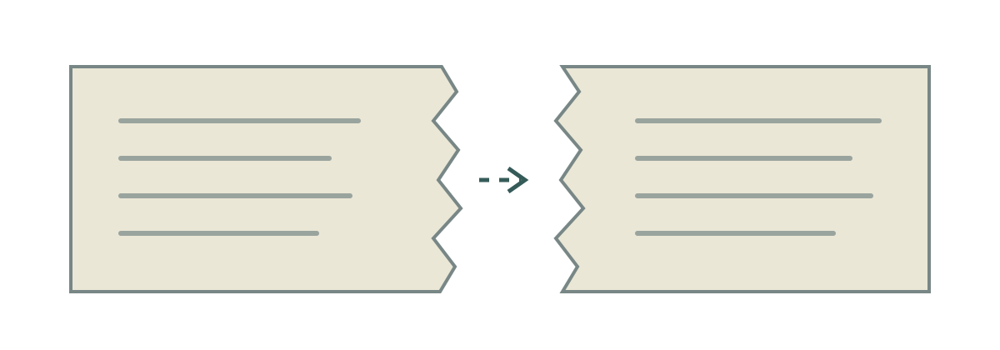

Криптография — инженерия доверия
Можно ли доверять сообщению, если отправителя мы никогда не видели?
Шифрование · подписи · открытые ключи · сертификаты · PKI
Можно ли доверять сообщению, если отправителя мы никогда не видели?
Шифрование · подписи · открытые ключи · сертификаты · PKI
| Механизм | Как помогает доверию |
|---|---|
| Хавала | Посредники передают распоряжение и проводят взаимные расчёты. |
| Тамплиеры | Учёт обязательств и хранение ценностей в сети учреждений. |
| Вексель | Письменное обязательство помогает организовать платёж в другом месте. |
Это исторические аналогии, а не криптографические протоколы.
Банкиру приносят письмо: «Выдать 100 золотых монет».
| Вопрос | Историческая проверка |
|---|---|
| Кто составил письмо? | Печать, подпись, полномочия. |
| Не исправили ли сумму? | Сверка текста и признаков документа. |
| Не выплатили ли раньше? | Учётные книги и отметка об исполнении. |
Имеет ли предъявитель право получить деньги?

Договор о 100 монетах записывали на одном листе и делили неровным разрезом. Части можно было приложить друг к другу.
Совпадение края — дополнительная проверка, а не абсолютная гарантия.
Перевести Бобу 100 000 ₽. Ева находится между ними.
| Угроза | Что делает Ева |
|---|---|
| Подслушивание | Читает сумму и реквизиты. |
| Подмена | Меняет получателя или сумму. |
| Самозванство | Выдаёт себя за Алису или Боба. |
Повтор, задержка и потеря распоряжения — отдельные проблемы.
| Свойство | Что проверяем |
|---|---|
| Конфиденциальность | Посторонний не узнаёт содержание. |
| Целостность | Изменение данных можно обнаружить. |
| Аутентичность | Можно проверить происхождение и владение ключом. |
Защита от повторного выполнения требует логики приложения.
HELLO + сдвиг 3 → KHOOR
Всего 25 ненулевых сдвигов. Их легко перебрать.
По принципу Керкгоффса секретным должен быть ключ, а не алгоритм.
| Алиса | Канал | Боб |
|---|---|---|
| Шифрует с ключом K | Передаёт шифротекст | Расшифровывает тем же K |
AES — пример современного симметричного алгоритма.
Алиса и Боб никогда не встречались, а канал прослушивается.
Как согласовать ключ K, не отправляя сам K по этому каналу?
| Публикация | Идея |
|---|---|
| 1976: Диффи — Хеллман | Согласовать общий секрет через недоверенный канал. |
| 1977–1978: RSA | Публично описанная система с открытым ключом. |
Более ранние разработки GCHQ стали известны публично позднее.
| Открытый ключ | Закрытый ключ |
|---|---|
| Боб публикует его. Алиса использует его для шифрования Бобу. | Боб хранит его в секрете и расшифровывает сообщение. |
Открытый ключ — не пароль. Он не обязан быть секретным.
| Шаг | Действие |
|---|---|
| 1 | Боб публикует открытый ключ. |
| 2 | Алиса шифрует сообщение для Боба его открытым ключом. |
| 3 | Боб расшифровывает сообщение своим закрытым ключом. |
На практике часто используют гибридное шифрование.
| Задача | Чей ключ используют |
|---|---|
| Скрыть текст для Боба | Открытый ключ Боба; он расшифрует закрытым. |
| Подписать текст от Алисы | Закрытый ключ Алисы; её открытым ключом проверят подпись. |
Подпись не скрывает текст. Шифрование само по себе не доказывает автора.
| Исходный текст | Результат SHA-256 |
|---|---|
| «Перевести 100 000 ₽» | Отпечаток A |
| «Перевести 900 000 ₽» | Другой отпечаток B |
Один хеш не доказывает, кто создал документ.
| Участник | Что происходит |
|---|---|
| Боб | Публикует открытый ключ. |
| Ева | Подменяет его своим ключом. |
| Алиса | Шифрует для Евы, думая, что для Боба. |
Шифрование работает. Привязка ключа к Бобу не проверена.
X.509 связывает идентификатор с открытым ключом.
| Поле | Пример |
|---|---|
| Subject / SAN | example.com |
| Public key | Открытый ключ сервера |
| Issuer | Удостоверяющий центр (CA) |
| Проверки | Срок действия и цифровая подпись CA |
| Уровень | Почему ему доверяют |
|---|---|
| Корневой CA | Заранее доверен браузеру или ОС. |
| Промежуточный CA | Его сертификат подписан корневым CA. |
example.com | Его сертификат подписан промежуточным CA. |
Доверие к корню — исходная настройка системы, а не математический вывод.
На компьютере преподавателя выполнить команду:
openssl s_client -connect example.com:443 -servername example.com -showcerts
Найти: домен, издателя, срок действия и цепочку сертификатов.
| Контекст | Что применяют |
|---|---|
| OpenPGP | Шифрование и подпись сообщений/файлов; разные модели доверия к ключу. |
| S/MIME | Защита почты, обычно с сертификатами X.509. |
| SSH | Защищённый канал, ключ сервера и вход с пользовательским ключом. |
Следующий шаг: ключи, сертификаты, шифрование и подписи в лабораторной.